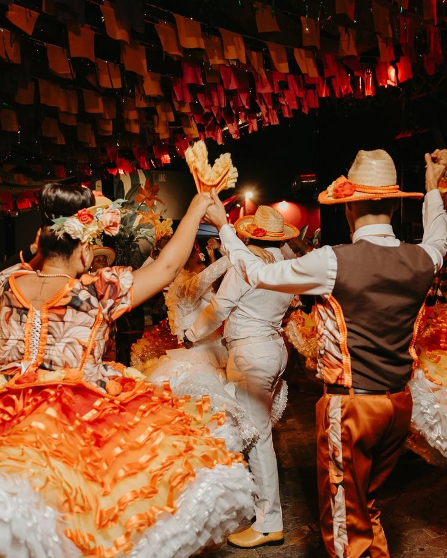
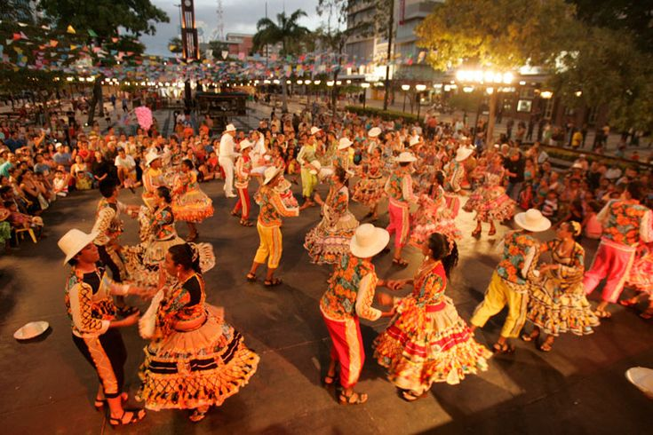
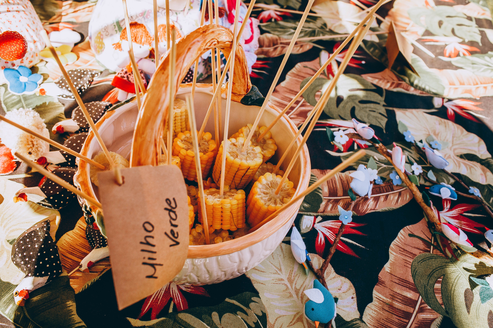
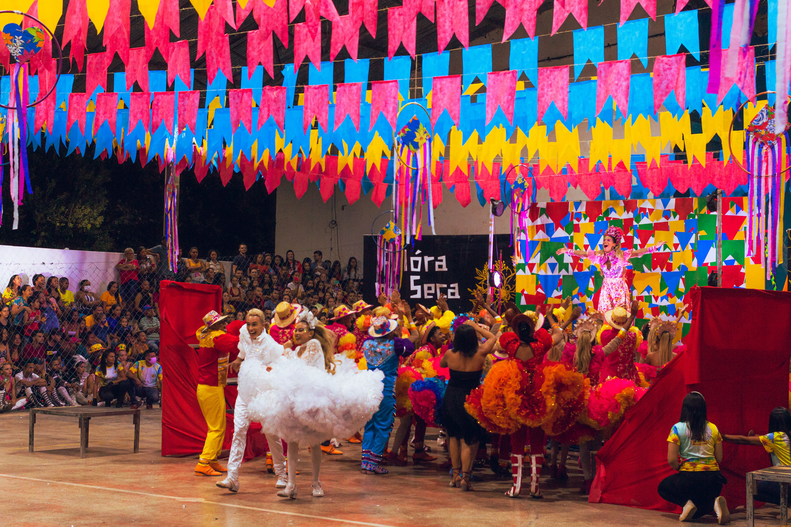
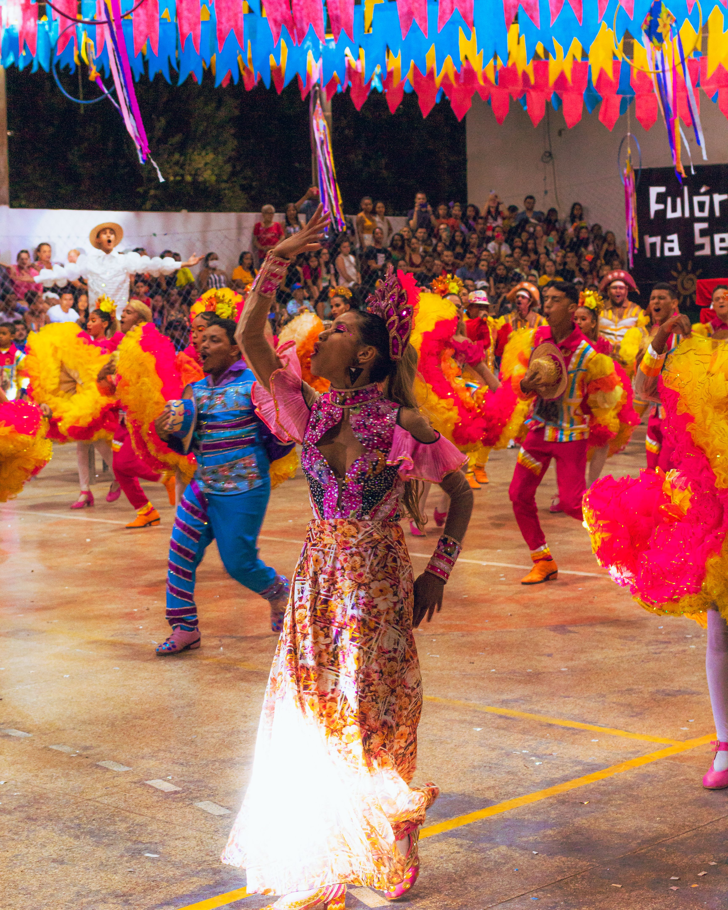
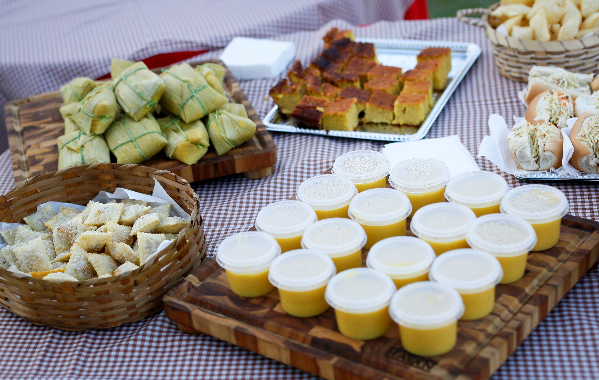

A Festa Junina é uma das celebrações mais populares do Brasil. Realizada principalmente durante o mês de junho, ela reúne música, dança, comidas típicas, brincadeiras e muita alegria. A festa possui influências de tradições europeias e foi ganhando características próprias ao longo da história brasileira.






Festa Junina 24 de junho
A quadrilha é uma das principais tradições da Festa Junina. É uma dança em grupo, geralmente realizada ao som de músicas típicas, com roupas caipiras e muita animação. Os participantes seguem os comandos do marcador e formam diferentes passos e movimentos durante a apresentação.
As comidas típicas são uma parte muito importante da Festa Junina. Entre os alimentos mais tradicionais estão o milho cozido, a pamonha, a canjica, o bolo de milho, o pé de moleque e a pipoca. Esses pratos ajudam a tornar a festa ainda mais especial e saborosa.
A fogueira é um dos símbolos mais conhecidos das festas juninas. Ela representa a tradição e ajuda a deixar o ambiente ainda mais aconchegante. Além dela, as festas contam com várias brincadeiras, como pescaria, correio elegante, jogo das argolas e boca do palhaço.